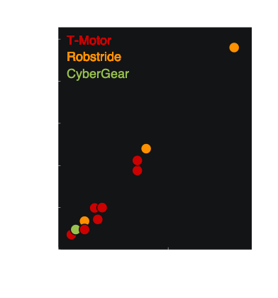
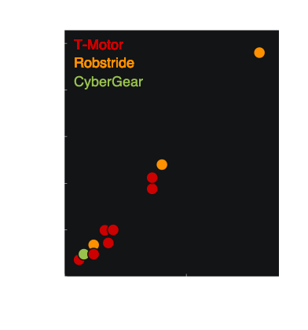

Part Picker¶
Important
ORDERING GUIDE
For a one-stop list of recommended part options, suppliers, prices, and ordering links for developing with Epically Powerful, please reference the ordering sheet below.
Single Board Computer¶
The single board computer will act as the ‘brain’ for the device. The computer will run a Linux OS and is where you will write and run your controllers.
Choice 1: Raspberry Pi¶
EP’s Recommendation A Raspberry Pi is the most affordable of the two options. Raspberry Pi’s don’t have native CAN communication (which is how they must communicate with the actuators), so you will also need to get the Waveshare RS485 CAN Hat board, which fits on a Raspberry Pi and enables CAN.
Order:
Raspberry Pi (Tested on models 3B/B+ and 4B/B+)
Waveshare RS485 CAN Hat
Raspberry Pi power cable (see note below)
Important
Raspberry Pi 1, 2, and 3 are powered by a micro-USB connection. Raspberry Pi 4 is powered by a USB-C connection. We have included recommendations for both in the ordering sheet, so please be sure to order the one that is compatible with your chosen Raspberry Pi device.
Choice 2: NVIDIA Jetson Orin Nano¶
A Jetson is particularly well-suited for real-time machine learning models, as it is equipped with an NVIDIA GPU. These computers can be a bit more complicated to set up, so we recommend this for more advanced users that need the ML capatability.
Order:
Jetson
Jetson barrel jack power cable
Actuator Power Source¶
These batteries will be used to power the actuators in your system. As noted in the ‘Computer Power Source’ section below, you can also use this to power your computer. We have recommended the appropriate batteries for each of the actuators that are compatible with Epically Powerful. The main decision for you to consider is how many Amp-hours (Ah) you need for your use case, which will influence your run-time before needing to swap out your battery.
Hint
We recommend ordering two batteries per device so that the batteries can be configured for hot-swapping.
Choice 1: Drill Battery¶
EP’s Recommendation You can use 24-Volt batteries that are typically used for power drills. We recommend this option because drill batteries are comparably low-maintenance, easily accessible, and durable. Their main con is that they may be a bit more bulky and heavy than lipo batteries. For devices where 1) power consumption/RMS torque is low, 2) you are able to switch batteries often, and/or 3) you do not need to operate for long time periods, we recommend the 2Ah battery which will be smaller and lighter weight. Otherwise, we recommend the 4Ah battery option.
Order:
2Ah Battery OR 4Ah Battery
Battery Adaptor
Screws for Battery Adaptor
Battery charger
Choice 2: Lipo Battery¶
You can also use lithium polymer (lipo) batteries. These batteries are comparably more power dense, allowing them to be lighter in weight. However, lipo batteries are also susceptible to catching fire, so we only recommend them if your group is familiar with and equipped with lipo charging equipment and storage (such as a lipo-safe bag).
Order:
Battery
Battery charger
Lipo-safe bags (storage)
Lipo-safe bags (operation)
Computer Power Source¶
The power source from your computer can be shared with the actuators or independent. If is shared, we have recommended the appropriate components to step down the voltage and protect the computer from voltage spikes. If it is independent, you will need to order a separate battery (recommendations below).
Choice 1: Pull Power from Actuator Power Source¶
EP’s Recommendation If you want to pull power from the same source as your actuators, we have included a few components that you will need. A buck converter is used to step down the battery voltage to a level that is appropriate for your computer. We also recommend including a fuse between your battery and computer to protect the system from excessive currents.
Order:
Buck converter
Fuse
Fuse holder
Choice 2: Power Bank for Separate Computer Power¶
If you want to separately power your computer, we recommend using a power bank.
Order:
Power bank
Connection cable
Important
Raspberry Pis operate on 5V while Jetsons operate on 9-19V. We have included power bank recommendations for both in the ordering sheet, so please be sure to order the one that is compatible with your chosen computer.
Additional Component Requirements¶
Order:
Battery power cable connectors
E-stop
Actuators¶
All of the listed actuators are commercially-available quasi-direct drive actuators that have been incorporated into epicallypowerful.
 

{kind=link}
Choice 1: CubeMars AK-Series Actuators¶
EP’s Recommendation CubeMars has a variety of AK-Series actuators available. We recommend specifically considering actuator mass, rated torque, and peak torque, as they have a large variety of actuators and the desired specifications will be specific to your use case. All actuator options are listed in the ordering sheet. This is our recommendation because this is the actuator that our lab has used the most extensively over the last 5 years. However, these are the more expensive of the possible actuators listed here.
Order:
Actuator(s)
R-Link
CAN cable kit
XT30 connectors
Choice 2: CyberGear Micromotor¶
The CyberGear Micromotor is a single actuator that is unique due to its low weight and relative affordability.
Order:
Actuator(s) (Can typically be found on AliExpress)
XT30 2+2 connectors
Choice 3: RobStride Actuators¶
Order:
Actuator(s)
XT30 2+2 connectors
Requirements for All Actuator Choices¶
Order:
CAN transceiver
XT30 power cables
Fuse
Fuse holder
E-stop
Sensors¶
You can choose from several possible IMU sensor types depending on your use case. While they differ in price and number of features, they all provide the same raw signals. Furthermore, each uses one of the basic communication protocols like serial or I2C, making them easy to integrate with your computer setup.
Microstrain IMUs¶
The MicroStrain IMUs provide extensive features on top of their basic accelerometer and gyroscope sensing, making their orientation readings highly drift-resistent. However, these benefits come at the (literal) cost of higher prices per unit.
Order:
MicroStrain 3DM-GX5-25. Comes with micro DB9-to-USB A connectors in the box
OpenIMUs¶
OpenIMUs combine the benefits of commercially supported hardware with open-sourced software and orientation algorithms.
Order:
OpenIMU
TE Connectivity Ampseal connectors
USB-to-RS232 adapter
MPU9250 IMUs¶
MPU9250 IMUs provide excellent raw accelerometer and gyroscope readings at a fraction of the price of more expensive units, though their orientation data are more prone to drift than other models.
Order:
MPU9250 IMU
TCA9548A multiplexer
DuPont jumper cable kit
Additional + Standard Mechatronics Materials¶
Power System¶
XT30 connector set
XT60 connector set (if using LiPo battery)
Item |
Notes |
|---|---|
12-gauge black/red wire |
Cable that will be used to connect all powered components in system |
XT30 connectors |
Recommended to add disconnection/break points in power cables in all possible configurations, needed for CubeMars V1/V2 actuator connection |
XT60 connectors |
Only needed if using lipo batteries |
XT30 2+2 connectors |
Needed for V3 CubeMars, CyberGear, and RobStride actuators |
Actuator Communication System¶
CAN cable kit
Jumper wires